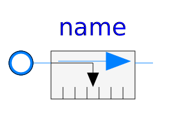

Base classes used in the Sensors package (only of interest to build new component models)
| Name | Description |
|---|---|
| Partial component to model a sensor that measures a potential variable | |
|  PartialRelativeSensor | Partial component to model a sensor that measures the difference between two potential variables |
| Partial component to model sensors that measure flow properties |